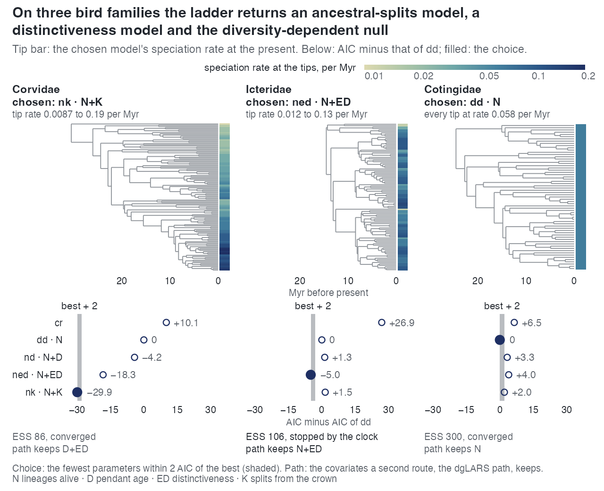
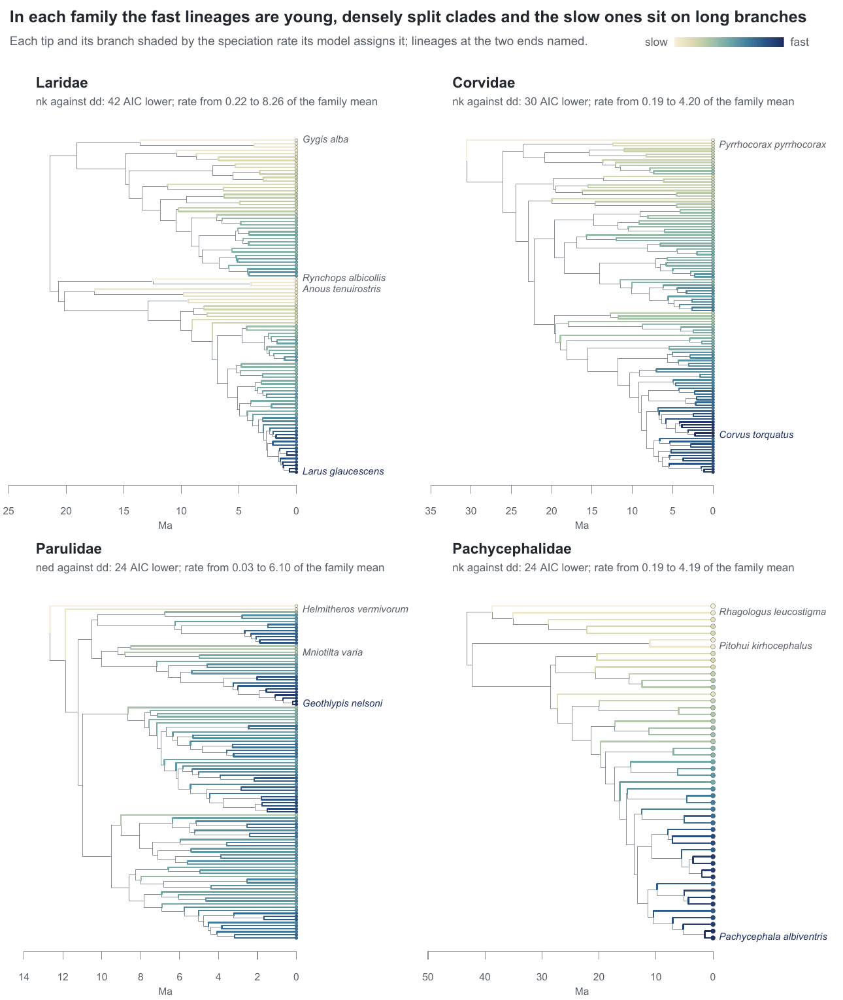

E28 — the families inside the measured range, as the analysis of record
| Status | complete (finished 2026-10-05); carries E26's merged table (results/E26merged/, E28's rows for these 29 families). The cr, dd, ned and nk rungs hold; the nd rung and the observed-tree paths are rerun under emphasis 4e0b9dd (E48, the refit of the nd rung on the real trees, and the path rerun within E47; Estimability), after which the choice tables are reread |
| Package build | f30a791 (its compare_models() reports the parsimonious choice) |
| Driver / analysis | sim/E25-real.R --box auto, sim/E26-analysis.R --in results/E28 --tag e28, sim/E28-compare.R |
| Data | results/E28/families.csv (29 rows), compare.csv, fits.csv, paths.csv, fit-<Family>.rds (29); report/e28-numbers.tex, e28-compare.tex, e28-table.tex; merged table results/E26merged/families.csv |
Question
E27 fixed where the one-call ladder is calibrated: 50 to 200 tips, turnover at or below 0.25, a sampling fraction of about 0.9 or more, and the AIC table read as the fewest parameters within 2 AIC of the minimum. Of E26's 47 families, 29 lie inside that range. E26's lineage-level fits met the stopping rule on 19 of 141, and the coefficients of unfinished fits are attenuated (E12b, E27). E28 refits the 29 with a longer budget, under the build that reports the parsimonious choice, as the analysis of record for that range.
Design
Trees. The 29 families of E26 with \(\rho \ge 0.90\): 24 bird and 5 mammal families, 50 to 177 tips, \(\rho\) 0.90 to 1.00.
| setting | value | change from E26 |
|---|---|---|
| ladder | cr → dd → {nd, ned, nk}, exponential link, each family's \(\rho\) |
— |
| box | auto_bounds() |
— |
| draws | 300 | — |
| iterations | 300 | 100 in E26 |
| clock | 60 min per fit | 30 min in E26 |
| choice | fewest parameters within 2 AIC of the minimum (compare_models()) |
minimum AIC in E26 |
| path | on the observed tree and on 3000 surrogate draws, as E26 | — |
Recorded per family: everything E26 records, plus the chosen model.
Pre-set rule
No decision rule; the calibration is E27's, whose false-positive rate in the nearest cell is quoted with each count. Fixed before the run: for these 29 families E28 replaces E26 in the biology paper (the chosen model, its margin and the coefficients are E28's), and E26's values are kept for the 18 families outside the range, marked as outside it. Reported beside the counts: the share of lineage-level fits that met the stopping rule, and the number of families whose chosen model differs between E26's minimum-AIC winner and E28's parsimonious choice. A family whose chosen fit has fewer than 10 effective draws is reported and left out of every across-family statement.
Results
Choice. 25 of 29 families are usable (winner ESS ≥ 10); Acanthizidae, Hipposideridae, Phyllostomidae and Scolopacidae are not. Among the 25 (compare.csv, recounted):
| reading | cr |
dd |
nd |
ned |
nk |
|---|---|---|---|---|---|
| parsimonious choice, all 25 usable | 4 | 5 | 0 | 8 | 8 |
| parsimonious choice, the 18 with a lineage-level verdict | 2 | — | 0 | 8 | 8 |
| minimum AIC, the 18 with a lineage-level verdict | — | — | 0 | 8 | 10 |
The verdicts (minimum-AIC definition of E26) are lineage-level 18, diversity-dependent 5, undecided 2. The two readings differ on 3 usable families, Charadriidae, Falconidae and Nectariniidae (nk lowest, cr within 2). Where two models with the same number of parameters are both within 2 AIC, the rule takes the one with the lower AIC: Meliphagidae chooses ned (nd 1.2 above it) and Rhinocryptidae nk (ned 1.1 above it). A lineage-level model is the parsimonious choice on 16 of the 18 lineage-level verdicts; the other two, Falconidae and Nectariniidae, choose cr.
Against E26 on the same 29. Where both runs are usable (21 families) the chosen model is the same on 20; the one that changes is Bucerotidae (cr → dd). On the 7 families that choose nk in both runs the K factors agree within 2% (median 1.95 in both). Lineage-level fits meeting the stopping rule: 24 of 87, against 19 of 87 in E26. Families crossing the usability line: Laridae (ESS 8.6 → 12.4) and Anatidae (1.3 → 10.6) in; Acanthizidae (106 → 1.4), Hipposideridae (296 → 1.1), Phyllostomidae (16 → 1.1) and Scolopacidae (16 → 1.0) out.
Coefficients (E28 alone): ned fits with ESS ≥ 10 have \(\beta_{ED} < 0\) in 22 of 24, median factor 0.69 per sd (0.33-1.08), leading dd in 14; nd fits have \(\beta_D < 0\) in 15 of 19, median factor 0.86. Fitted turnover at the crown below 0.05 in 27 of 29; \(\gamma < -1.645\) in 24 of 29. Wall-clock per family: median 3.0 h (0.5-4.2).
The three families of E5 (E28 rows):
| family | chosen | AIC relative to dd: cr / nd / ned / nk |
ESS and stop of the chosen fit | path keeps |
|---|---|---|---|---|
| Corvidae | nk (11.6 below ned) |
+10.1 / -4.2 / -18.3 / -29.9 | 86, converged | D+ED |
| Icteridae | ned |
+26.9 / +1.3 / -5.0 / +1.5 | 106, clock | N+ED |
| Cotingidae | dd |
+6.5 / +3.3 / +4.0 / +2.0 | 300, converged | N |

dd gives every tip 0.058 per Myr), and below it each rung's AIC minus that of dd, the choice filled. Read the three columns as the three outcomes the ladder can return: a K model by 30 AIC, an ED model by 5, and the diversity-dependent null kept.
Conclusion
No rule; the record is descriptive and the commitments were met: E28's rows replace E26's for the 29 families in the merged table, with the stopping-rule share (24 of 87) and the reading change (3 of 25 usable families choose differently under the parsimonious rule than under the minimum AIC) reported. Doubling the budget moved few conclusions: the same choice on 20 of 21 comparable families and K factors within 2%, while 5 more lineage-level fits met the stopping rule and four families fell below 10 effective draws. 63 of 87 lineage-level fits still did not meet the rule, so the coefficients remain those of mostly unfinished fits, which E27 measured as short of their generating value (0.65-0.76 for K at 100 iterations).
The split quoted is the parsimonious one, cr 4, dd 5, nd 0, ned 8, nk 8 over the 25 usable families (ned 8 and nk 8 among the 18 lineage-level verdicts, cr on the other two); the minimum-AIC split (ned 8, nk 10; merged table 21: nk 12, ned 9) is the sensitivity reading beside it. The parsimonious choice comes first because it is the rule registered before the data, and MCEM log-likelihoods carry Monte Carlo error and a downward bias, so AIC differences below 2 are within the estimator's noise.
This page carries E26's merged table: its rows for these 29 families are E28's. The nd rung and the observed-tree paths maximised and read the earlier D likelihood and lineage table. Emphasis 4e0b9dd changed the D likelihood; before it the likelihood held the clade mean pendant age at its segment-end value, so \(D\) grew within a segment while the simulator held it constant; from it \(D\) is constant between events in both. On complete trees E44 measured d's \(\beta_D\) at 0.70 and 1.46 of its value under the earlier likelihood and 0.95 and 1.16 under the current one (nd at -0.35: 0.77 and 1.01). They are rerun under the current build (E48 and the path rerun within E47); the nd count (chosen on none of the 25) and the nd coefficients (15 of 19 negative, median factor 0.86) are those of the earlier likelihood until then.
Related
- E26 — the 47-family run E28 replaces for these 29.
- E27 — the calibration that defines the range and the parsimonious reading.
- E25 — the three bird families under the earlier budget.
- E39 — what the covariates share on these trees.
- E40 — the same fits, at a 300-iteration budget and a four-hour clock, on many more trees.